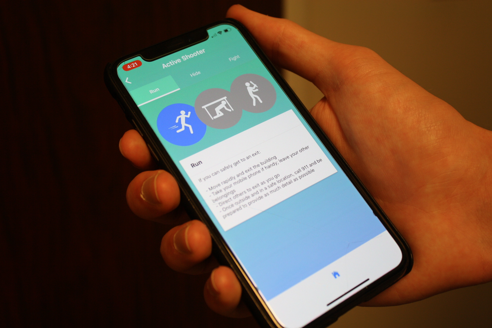

Emergency Guidance üöë
React Native Mobile Application
At my summer internship at Booz Allen Hamilton, my team and I designed and tested a mobile application for both iOS and Android from back-end to front-end. From connecting the content management system to selecting the icons, everything was coded from scratch. My role in the team was mainly UX/UI design and also front-end development. It was amazing to focus on what I was the most interested in while helping each other out with our own strengths.
I picked up numerous valuable skills such as Agile, React Native, JavaScript, HTML, CSS, Jest, and Enzyme. I cannot provide too many details on this project but will share as much as I can with personal insights!
Wireframe
This is the initial wireframe that I created with Sharpies and highlighters. We received feedback on this design and decided to start with more simple functions as they meet the client's requirements.
I knew nothing about React Native. I was thrown into a team of four Computer Science majors. But I was able to use my design background as my strength, contributing more to the front-end and the usability. For an application where the content (data) is everything, the way we display information is incredibly important, and my work felt valued.

User Interface Design
Sticking with a simple graident inspired by Booz Allen's brand guideline as the app's background, I followed the universal icons that were offered in FontAwesome. The text were presented in white and sometimes in black on a white card background. As the designer in the team of developers, it was essential to stress the importance of user experience. For a team that was brand new to mobile app developing, we discovered it was important to fail fast and learn from the mistakes. At one point, we had to build the whole full-stack architecture all over again!
Final Product
The final product was a working product that we were able to demo in real time. After numerous iterations of testing, we were able to proudly present our application that we developed from scratch. Our biggest challenge was establising consistency between iOS & Android devices, as well as adapting to their differences and making it work for any type of screen. A fix to this was to continue iterative testing and learning as we went.
This project was important to me because of my passionate, collaborative team. I got tons of Agile software development experience. I also came out of there feeling like I can build a mobile application without anyone‚Äôs help. During our final presentation in D.C., employees actually wanted to use our product, and we recieved compliments on the aesthetics (which were all led by me ü§ì).
